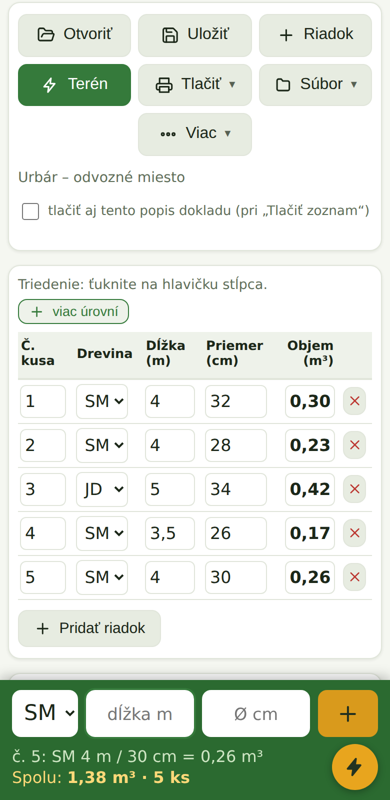
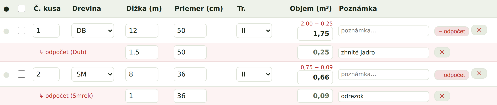
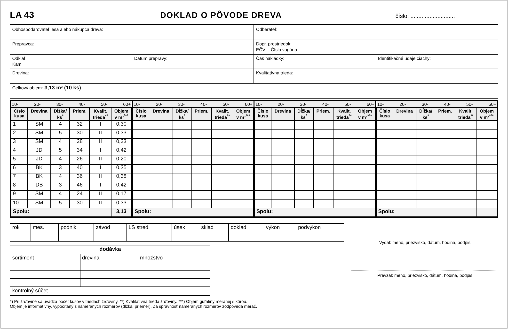
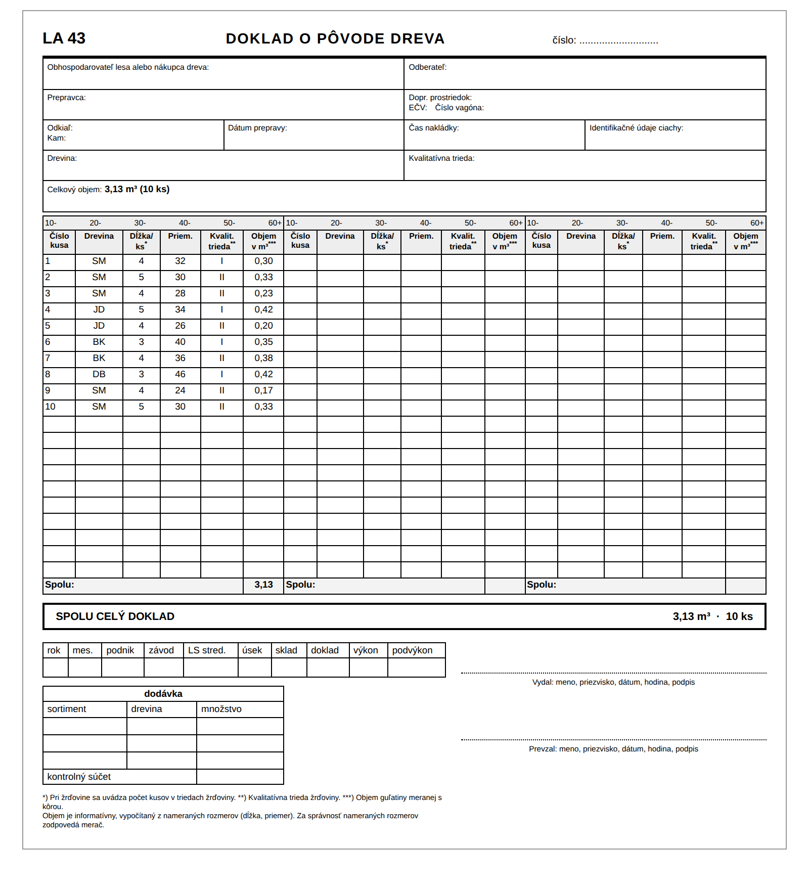
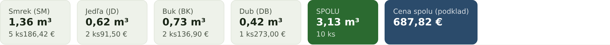
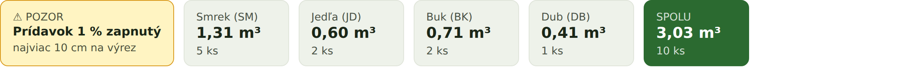

Presný výpočet objemu guľatiny meranej s kôrou, kompatibilný s normou STN 48 0009. Od zadania kusov po úradný doklad — v kancelárii aj v lese.
Plná verzia na 24 hodín – bez platby a bez záväzkov. Stiahnete, v programe kliknete na Vyskúšať 24 hodín zadarmo a o minútu kubíkujete.
Na stiahnutie pre: Windows Android Linux
Kliknutím ukážku zväčšíte · Podrobný postup krok po kroku
Od merania kusov po úradný doklad — rýchlo, prehľadne a spoľahlivo.
Objem guľatiny meranej s kôrou (priemer aj dĺžka s kôrou) pre smrek, jedľu, borovicu, smrekovec, buk, dub a topoľ aj pre príbuzné dreviny (javor, hrab, jarabina, lipa, platan, čerešňa, hruška, jabloň, cér, brest, jaseň, agát, breza, pagaštan, osika). Objem počíta z Huberovho vzorca so zrážkou kôry; výsledky sú kompatibilné s normou STN 48 0009.
Veľké polia na rýchle zadávanie v lese, bežiaci súčet objemu a kusov. Tabuľka sa sama posunie na nový kus a ukáže jeho objem, na mobile zadanie potvrdí jemná vibrácia. Rukavice ani slnko nevadia.
Doklad o pôvode dreva na jeden klik — na šírku aj na výšku, vytlačíte alebo uložíte do PDF.
Pri nakladaní na odvoz jednoducho zaškrtnete, ktoré kusy sa naložili — a LA 43 sa vytvorí len pre ne. Za pár sekúnd.
Máte všetko v jednom zozname? Program automaticky rozdelí dreviny a vytvorí samostatný LA 43 pre každú z nich.
Zadáte chybnú časť kusa a program ukáže hrubý aj čistý objem po odpočte — všetko zdokladované.
Voliteľne odpočíta prídavok na dĺžku 1 % – z nameranej dĺžky určí menovitú (÷ 1,01) a z nej počíta objem. Na výber najviac 10 cm na výrez alebo 1 % z celej dĺžky bez obmedzenia.
Zadáte, o koľko metrov skrátiť namerané dĺžky, a objem sa hneď prepočíta — s náhľadom pred a po.
Palivové drevo prepočítate jedným klikom: m³ ↔ priestorový meter rovnaný (PRMR) aj sypaný (PRMS) — z celého dokladu, označených kusov alebo ručne zadanej hodnoty. Zadáte cenu za zvolenú jednotku a program dopočíta ekvivalenty aj celkovú sumu. Koeficienty si upravíte podľa dohody.
Zadáte cenu €/m³ na drevinu aj podľa kvalitatívnej triedy (I, II, III.A–D). Program vyberie cenu podľa triedy kusa a spočíta podklad k faktúre.
Priebežné súčty podľa drevín, počet kusov, objem a cena — prehľad naprieč zákazkami.
Zoradíte kusy podľa dreviny, dĺžky, priemeru či objemu — aj kombinovane. Označené kusy použijete na doklad či prepočet.
Načítané uložené súbory pridáte do aktuálneho dokladu — z viacerých zoznamov spravíte jeden.
Otvorené doklady v záložkách, archív s uložením a vyhľadávaním — nič sa nestratí.
Doklad uložíte do súboru a kedykoľvek načítate späť; CSV otvoríte rovno v Exceli.
Prehľadné aj na ostrom slnku alebo pre slabší zrak — jedným tlačidlom zväčšíte celé ovládanie.
Ten istý program na počítači aj v mobile, funguje bez internetu. Doklady prenesiete medzi zariadeniami. Aktualizácie zdarma.
Tri veci, ktoré vám ušetria najviac času.
Kus zadáte aj jednou rukou – priamo pri hromade, bez papiera a prepisovania.

Zadáte chybnú časť kusa a program ukáže hrubý aj čistý objem po odpočte.

Doklad o pôvode dreva vytlačíte alebo uložíte do PDF – na šírku aj na výšku.




Jedným kliknutím stiahnete najnovšiu verziu pre svoj systém. Po inštalácii ju môžete 24 hodín skúšať zadarmo — stačí jedno tlačidlo v programe.
Jedným kliknutím stiahnete verziu pre Windows, Android alebo Linux. Inštalácia je bežná — Ďalej, Dokončiť.
Po spustení zadáte meno a e-mail a kliknete na Vyskúšať 24 hodín zadarmo. Program sa hneď odomkne — s plnou výbavou a bez záväzkov.
Keď sa vám program osvedčí, objednáte si licenciu priamo z programu alebo formulárom nižšie. Pošleme ju e-mailom a aktivujete ju jedným kliknutím. Funguje aj offline.
Kubikovač je dostupný pre Windows, Android a Linux.
Jednoducho a férovo — bez skrytých poplatkov.
Používate program na počítači aj v mobile? Druhé zariadenie so zľavou −50 %.
Stručne o licencii, skúšobnej verzii a práci s programom.
Áno. Po inštalácii zadajte meno a e-mail a kliknite na „Vyskúšať 24 hodín zadarmo“ – program sa hneď odomkne s plnou výbavou a bez záväzkov. Skúšobná verzia potrebuje pripojenie na internet; plná licencia funguje aj bez neho.
Licencia je viazaná na jedno zariadenie – počítač, mobil alebo tablet. Program vám ukáže kód zariadenia a my vydáme licenciu presne naň. Mesačná licencia platí mesiac, ročná rok a jednorazová bez časového obmedzenia. Program funguje aj bez internetu.
Pošlite nám kód nového zariadenia a vydáme vám licenciu naň. Doklady si predtým preneste exportom – v Androide sa pri odinštalovaní programu zmažú.
Áno. Každé zariadenie má vlastnú licenciu; druhé zariadenie má zľavu 50 %. Doklady medzi zariadeniami prenesiete exportom a importom.
Nie. Program počíta, ukladá a tlačí aj bez internetu – v lese aj v kancelárii. Internet treba len na stiahnutie programu a novej verzie a počas bezplatnej skúšky.
Objem guľatiny meranej s kôrou počíta z Huberovho vzorca so zrážkou kôry podľa dreviny – pre smrek, jedľu, borovicu, smrekovec, buk, dub a topoľ aj pre príbuzné dreviny (javor, hrab, jarabina, lipa, platan, čerešňa, hruška, jabloň, cér, brest, jaseň, agát, breza, pagaštan, osika). Príbuzné dreviny sa počítajú podľa tabuľky buka, duba alebo topoľa – v programe je prehľad, ktorá drevina kam patrí. Výsledky sú kompatibilné s normou STN 48 0009.
Objednáte formulárom alebo e-mailom. Pošleme vám faktúru, platí sa prevodom na účet a licenciu dostanete e-mailom. Podrobnosti sú v obchodných podmienkach.
Len vo vašom zariadení – program ich nikam neposiela. Automaticky si robí zálohy a doklady viete kedykoľvek exportovať.
Áno. Program vás na novú verziu upozorní a tá sa nainštaluje cez pôvodnú – doklady aj licencia ostanú.
Áno. Postup uvidíte pri každom stiahnutí a radi pomôžeme aj na diaľku – stačí napísať na agroberit@gmail.com.
Objednajte si licenciu alebo sa na čokoľvek opýtajte.
agroberit@gmail.comOdpovedáme spravidla do 24 hodín.